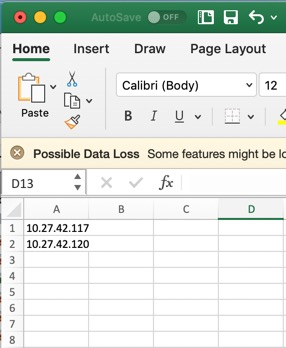

Welcome to CE-Deploy(CED). CED is meant to be a easy to use tool that helps fill the gaps from other deployment tools such as CUCM or TMS. CED takes advantage of the putXML API that all CE firmware supports. While certain features will be dependant on your CE or codec version, this tool will attempt to deploy all features requested of it. It does not do a version check to see if your load of firmware or codec is compatible with the attempted features to be deployed. As an example, macros are not available on the SX10 codec.
There are a few things you will need to get started with CED:
Once you have these items its time to get started deploying your files or digital signage. Let the fun begin!
Your username and password will require the use of a local admin account on the codec you are trying to configure. While cloud endpoints are supported, the requirement for a locally provisioned account is still applicable. Permissions required for provisioning your endpoint will vary depending on the feature and function desired but most changes can be achieved with the ROOMCONTROL and INTEGRATOR permission set.
Once you have entered your Username and Password into the interface you can do a credential check. The credential check requires that a CSV is loaded into CED using the file browser dialog with at least one valid IP address. The credential check button can then be pressed.
Selecting the secure deployment check box will only allow the use of https to deploy files and settings. In some cases this is required as http has been disabled.
The Credentials check will take the first IP address in the CSV file and do a XML poll of the endpoint using getStatus on the endpoint. If the getStatus is successful the green "Authentication Successful" will appear. If it fails you will be presented with a red "Authentication Failed" and you are by definition a looser. Funny, I can say what I want in here I just really wanted to see how far you would read this boring crap before I attempted to lighten the mood.
Using the file browser dialog, a CSV file with endpoint IP address or domain names can be uploaded to deploy files to your endpoints. This file can be created using MS Excel or other text editor and saved as a CSV file. See example below:
All endpoints in the CSV will be loaded into the application and any deploy action taken will affect all endpoints listed in the CSV file. The only exception to this is the credential check which only uses the first entry in the CSV file to validate. Note, the credential check is a only done via the Check Credentials button. Failure to check your credentials may lead to extended authentication failures due to incorrect password or username. At this time, once the deployment is underway there is no turning back and CED will run its full course regardless of authentication failures.
The recomended best practice is to ensure that all IP addresses are actually video codecs, online and reachable. While processing will continue should an issue arises, the time it takes to complete the deployment will increase with unresponsive IP address or unresolvable device names. Cloud registered devices on the Internet may be unreachable for the tool although they may be online. Ever get confused by the use of may be and maybe? I do all the time.
CED can deploy touch 10 XML files and macro files. Touch 10 XML files alter the layout of a touch 10 controller and macros are used to extend the functionality of the codec using Javascript running inside the codec's macro engine.
There are two options once you have selected the UI Control option inside the tabbed deployment interface; Config and Panel.
Both options allow the use of a XML file downloaded from a previously configured Touch 10 controller using the in-room configuration tool. The Panel option will error if the XML file uploaded has more than one panel but this only occurs during deployment. Make sure to select the right deployment option other wise you will end up sitting there waiting and all you will get is errors. In future versions this may be checked for you, but for now it is not.
As yet undocumented, stay tuned.
How many times have raised a TAC case only to need to download the log files? Well now this tool can help with those use cases as well as the need to do regular mass download from multiple endpoints.
CED makes the request to the endpoint for all log files bundled in a gzip format. Once the request has been granted, CED streams the log files from the codec to a download directory. All log files are named with the endpoint IP address and a timestamp to make identification easy.
To access the log files after the completion of the download use the Tools>Downloaded Logs menu. This will open the file browser on your OS giving your access to the files downloaded. Downloading from multiple endpoints is done in sequence so if the volume of endpoints is large, it can take some time for the job to complete. To monitor the creation of logs as the process completes open the Downloaded Logs directroy through the tools menu to ensure logs are being created.
Deploying wallpaper is nothing but a pain but now with CED it becomes a treat. Simply select Wallpaper from the deployment panel options and browse to the wallpaper you wish to deploy. Nothing could be simpler, right! Oh come on its kinda simple. Really.
You may be wondering why it has not been this simple till now. The wallpaper API is still considered a unsupported API. So while it may work as of CE9.6 future versions this function may be removed or it may in fact end up being supported.
Lastly, don't worry if this function is a little slow. The Wallpaper image is streamed down to each endpoint. The larger the scale of your wallpaper the longer it will take. Just keep that in mind. Branding on the other hand works very differently so skip to the next section and stop giving me grief on how hard it is to deploy wallpaper punk.
The wonderful world of branding; it's so much better than wallpaper. While branding is pretty cool, its only available on CE devices not including the SX10. For the SX10 wallpaper its your only personalization option as of CE9.6. Sucks to be an SX10, right! Yeah, you know it.
While I am not going to cover every facet of branding, this option allows you to upload awake and half awake logos and a background logo. Its pretty straight forward and as of today PNG and JPEG formats are accepted, at least by this tool. No not me, CED! How dare you? Only my wife gets to call me that.
Lastly on branding, if you had previously deployed wallpaper and are moving to branding, this tool will disable wallpaper and upload your branding images. Unlike wallpaper branding, this uses base 64 encoding to transfer the images as text which are then decoded by the endpoint. The encoding process only happens once inside CED and then the resulting file is sent to your endpoints. This means its a much faster deployment process then wallpaper. Got it? Good. Don't make me repeat myself. Actually if you need me to repeat it just scroll up and reread it.
From time to time an error may occur. Once the job you have deployed has completed an indication of the number of errors is shown under the progress bar.
To access the application log and check for errors go to Tools>Application Log. This will open the application log in your default text editor.
The End. I need a coffee after all that. Do you know how long it took me to type all this out. I was up past midnight last night and on a Sunday. Yeah you better be grateful. Now get the hell out of here and go deploy something!